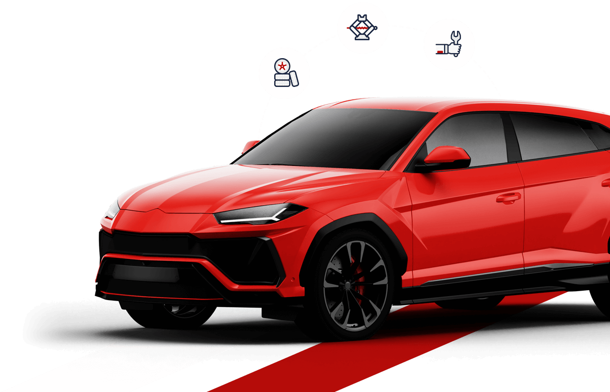
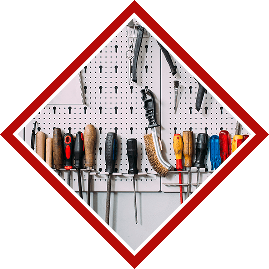
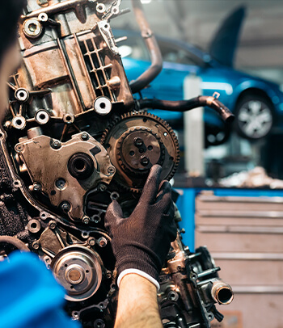
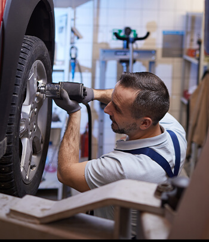
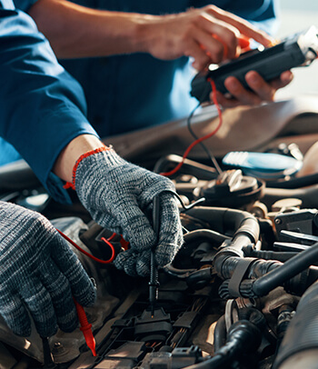

Stație ITP
Inspecție Tehnică Periodică rapidă și corectă pe 3 linii dedicate, cu programare la oră fixă.
- Verificare frâne, direcție și emisii
- Programări rapide fără așteptare
- Notificare clară la expirare / revenire
Îngrijire completă pentru autoturismul tău pe Str. Magazia Gării, nr. 3F: inspecție tehnică periodică rapidă pe 3 linii, mecanică de precizie, vopsitorie profesională și servicii complete de roți.

De la inspecția tehnică periodică până la reparații mecanice, vopsitorie și echilibrare roți — lucrăm transparent, cu programări clare și echipamente dedicate.
Inspecție Tehnică Periodică rapidă și corectă pe 3 linii dedicate, cu programare la oră fixă.
Revizii periodice, reparații mecanice complete și diagnoză computerizată multimarcă.
Pregătire atentă a suprafețelor, vopsire profesională, finisaj uniform și protecție durabilă.
Montaj sezonier anvelope, echilibrare de precizie și reparații rapide pentru siguranță la drum.

Înființată în 2023 și situată pe Str. Magazia Gării nr. 3F, echipa ACW Fălticeni îmbină experiența practică în service auto și vopsitorie cu o stație ITP modernă organizată pe 3 linii.



Pentru programări ITP, service, vopsitorie sau vulcanizare, sună direct sau scrie-ne pe WhatsApp.